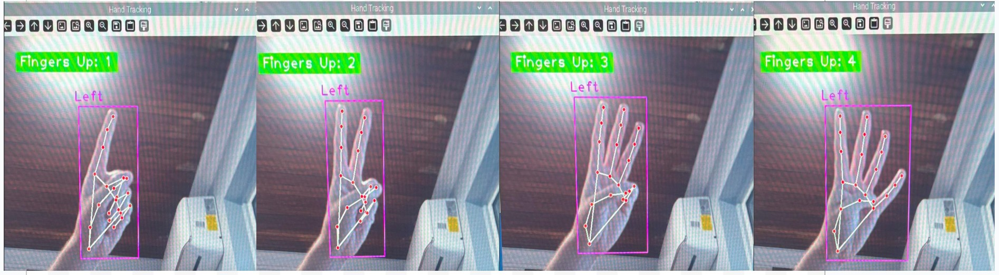

This project combines computer vision with embedded systems and analog audio processing to create a gesture-controlled guitar effects amplifier. Using hand tracking and finger detection via a Raspberry Pi and a camera module, the system recognizes different hand gestures to dynamically switch between guitar effects in real time.
Computer Vision & Gesture Recognition
Implemented real-time hand tracking using a Raspberry Pi Camera Module and the cvzone HandTrackingModule.
Detected number of raised fingers using finger landmark analysis, enabling intuitive gesture-based control (e.g., 1 finger = clean, 2 = overdrive, 3 = clean + delay, 4 = overdrive + delay).
Transmitted the finger count via UART to an STM32 Nucleo board for real-time hardware switching.

Custom Analog Guitar Amplifier Design
TL072 op-amp preamp stage for clean signal boosting.
LM386 module for analog overdrive/distortion.
PT2399 delay module for echo and ambiance effects.
PAM8403 module for final audio amplification to speaker.
CD4066 analog switches to route signals based on gestures.
Each gesture dynamically controls the CD4066 switching logic to select one of the following audio paths:
Clean
Overdrive
Clean + Delay
Overdrive + Delay
Embedded Communication
UART communication between Raspberry Pi and STM32 Nucleo transmits gesture data.
STM32 firmware written in STM32CubeIDE interprets gestures and toggles analog switches accordingly.
This project showcases full-stack embedded systems integration—from real-time computer vision on the Raspberry Pi to low-level audio signal routing on the STM32, with a custom analog amplifier circuit. It highlights practical skills in digital-analog interfacing, embedded C programming, computer vision, and real-time system design.